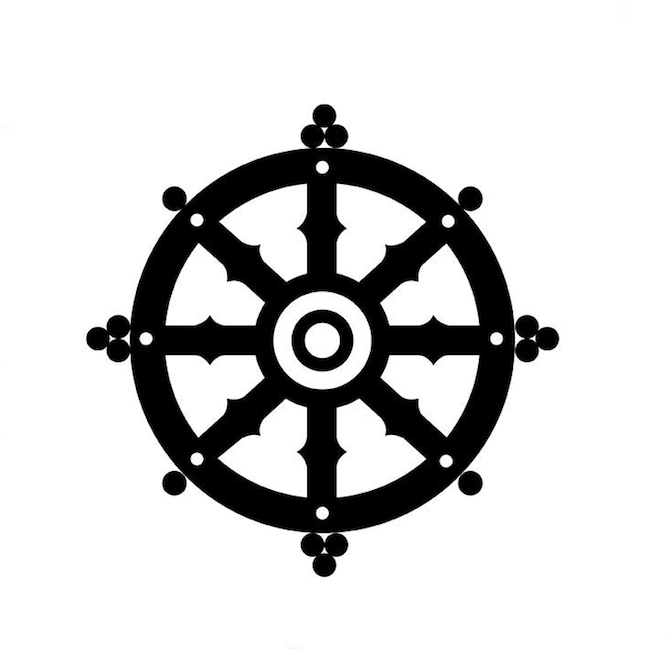

Buddhism

Buddhism was the strongest religion power in Nanjing due to historical and gephorical reasons. There are many buddhistic cultural attractions in Nanjing. Buddhist culture flows into Nanjing, beginning with the end of the Eastern Han Dynasty (189-220). Although Nanjing was built only 2480 years ago, Buddhism has come to Nanjing for 1780 years.